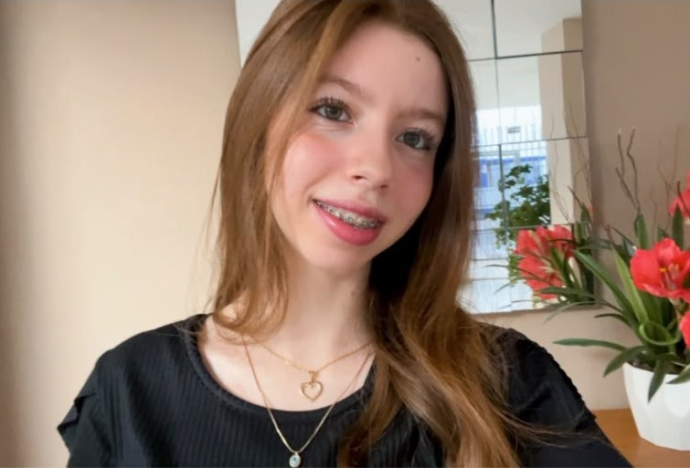
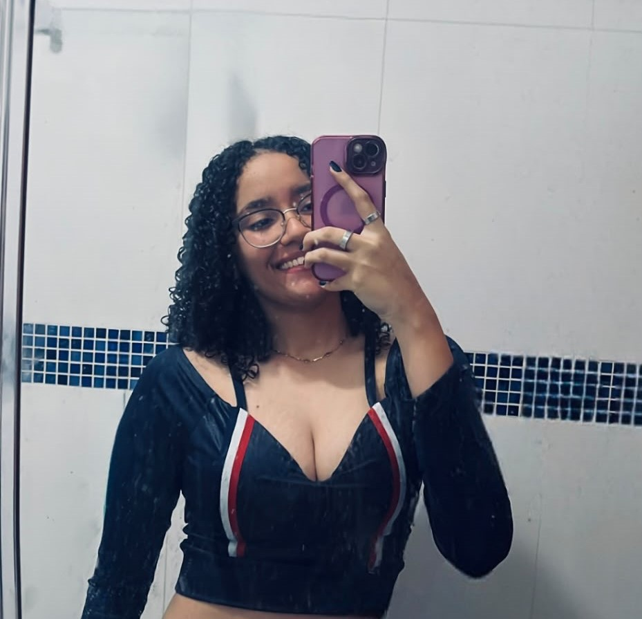
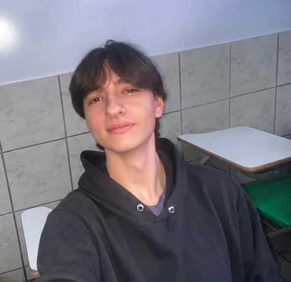
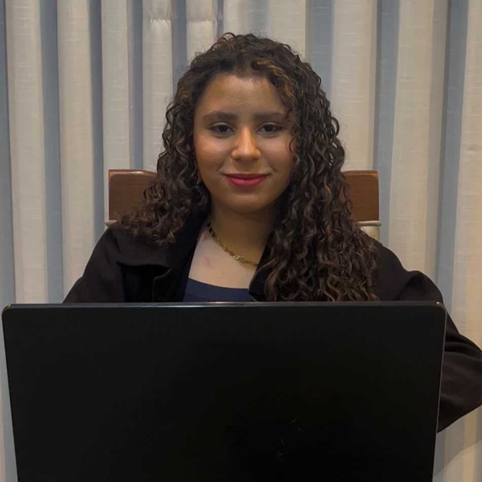
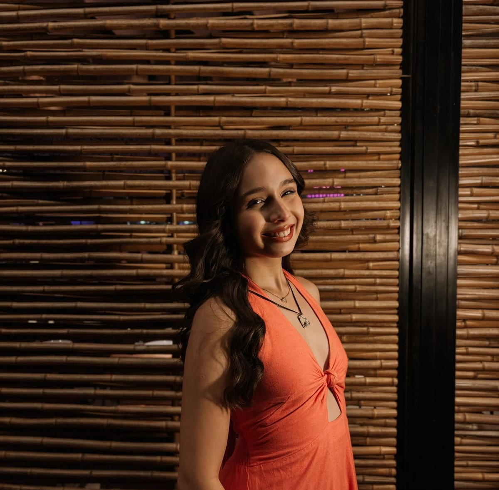
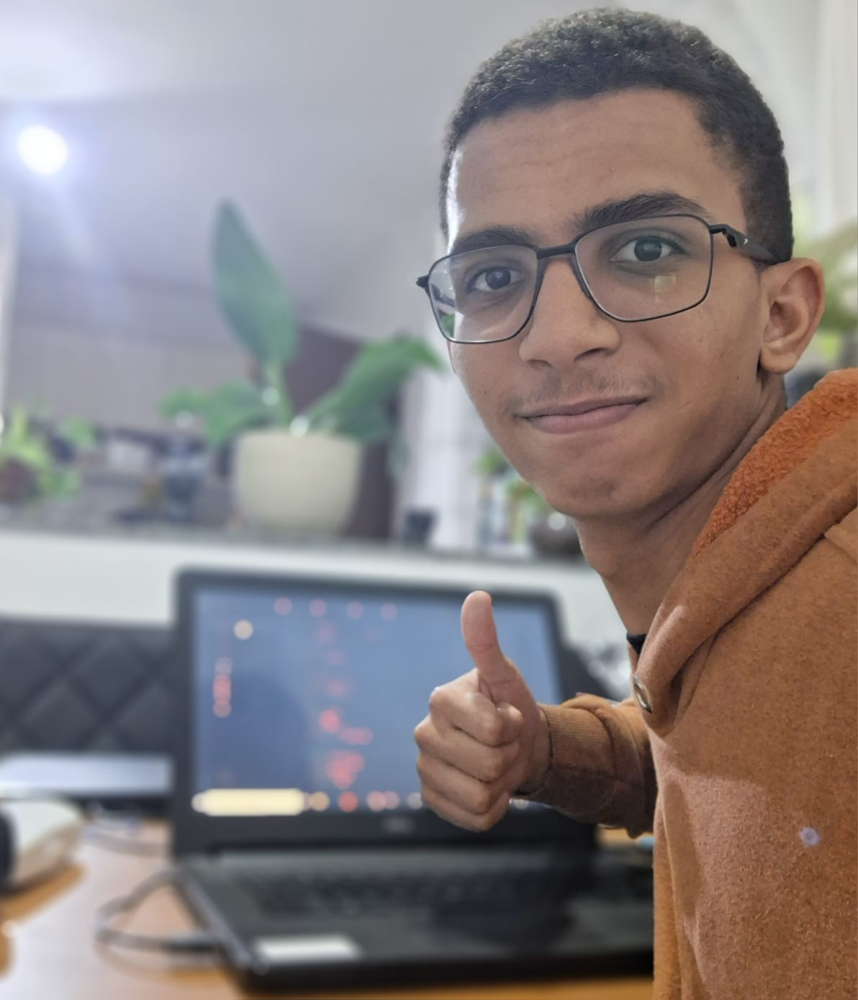

Arthur Pelisson
Gerente de projetoOrganiza as etapas do projeto, define prazos e acompanha as entregas da visita técnica à instalação.
PLANEJAMENTO / PRAZOS / ENTREGASMEMBROS / NOSSA EQUIPE
MULTIDISCIPLINAR POR ESCOLHA.
Gestão, infraestrutura, redes, documentação e IA na mesma equipe.
COLABORATIVA POR NATUREZA.
Cada integrante cuida de uma parte do projeto, do levantamento à entrega.
CONHEÇA NOSSO TIME
Organiza as etapas do projeto, define prazos e acompanha as entregas da visita técnica à instalação.
PLANEJAMENTO / PRAZOS / ENTREGASLidera a equipe técnica, define as soluções e garante que cada instalação siga o padrão combinado.
LIDERANÇA / REDES / QUALIDADE TÉCNICA
Cuida da parte administrativa, dos orçamentos e do contato com o cliente durante todo o projeto.
ORÇAMENTOS / DOCUMENTOS / ATENDIMENTO
Participa da montagem, dos testes e da organização dos equipamentos e do cabeamento.
MONTAGEM / TESTES / ORGANIZAÇÃO
Escuta pessoas, investiga contextos e transforma descobertas em oportunidades de evolução.
PESQUISA / SERVIÇOS / ACESSIBILIDADE
Controla a lista de materiais, compara fornecedores e separa os equipamentos de cada projeto.
MATERIAIS / COMPRAS / ESTOQUE
Usa IA para organizar levantamentos, pesquisar soluções e revisar propostas, sempre com validação da equipe.
IA / PESQUISA / PROPOSTAS
Responsável pela infraestrutura de TI: servidores, instâncias AWS EC2, acesso seguro e configuração de rede.
CLOUD / AWS / SERVIDORESNOSSO JEITO DE SER
Normas e cuidado em cada projeto.
Sem surpresas.
IA como apoio, decisão humana.
NOVAS PERSPECTIVAS SÃO BEM-VINDAS
Queremos conhecer pessoas que compartilham esse jeito de trabalhar.